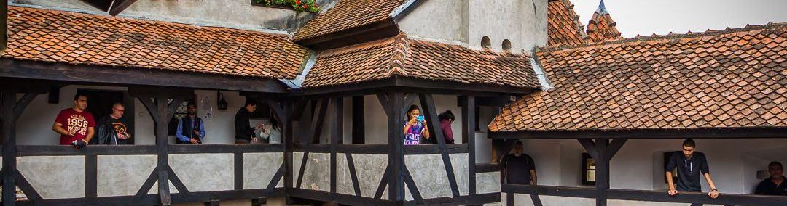
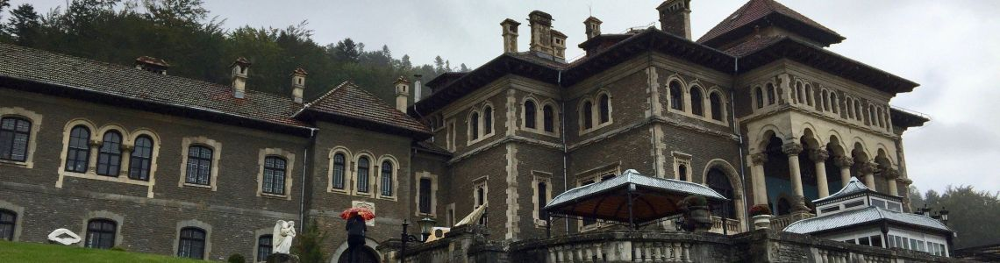
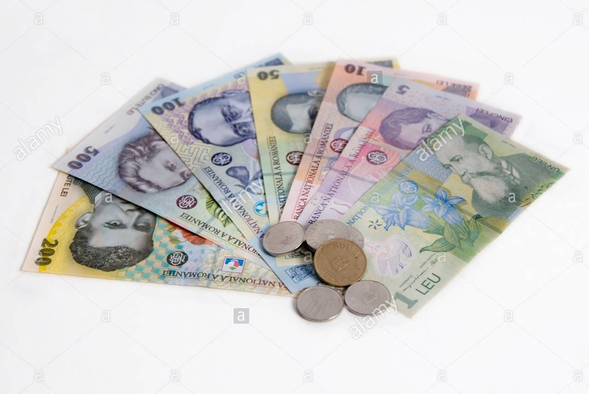
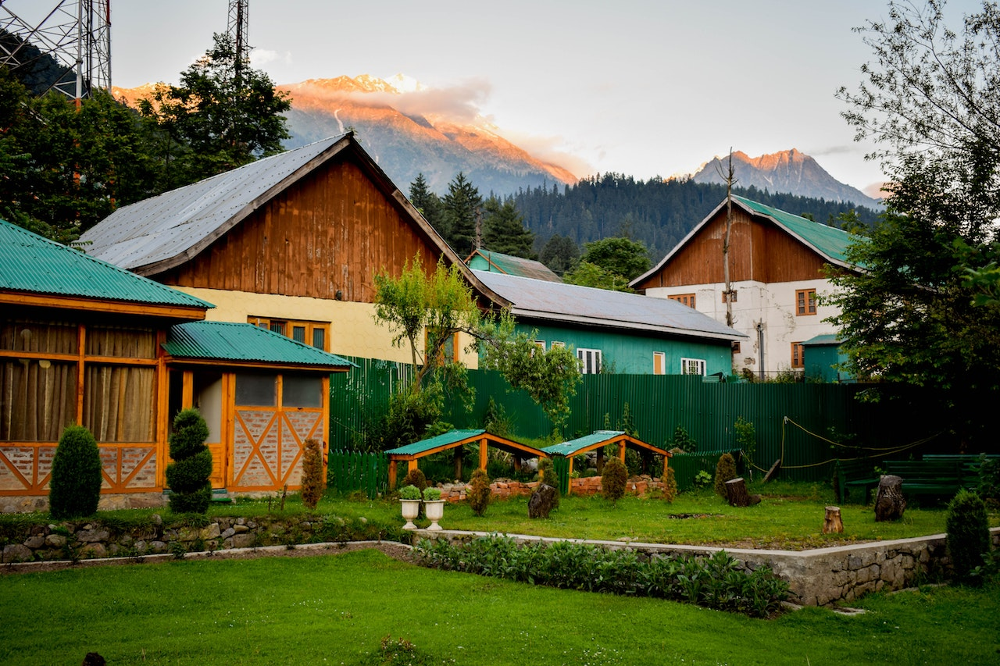

Travel Guide for First time Visitors in Romania

If you're planning a trip to Romania and you're a first time (or returning!) visitor looking for a complete travel guide with info on what to visit, when, how, why and other useful travel tips - this article is for you! We'll tell you the most important things to know about visiting Romania, tourism in our country and how to plan an amazing trip! Is Romania worth visiting? In short, YES! The long answer you'll see for yourself if you check our other articles on major tourist attractions, things to do and lesser known sights, natural attractions, cuisine, communist history and city guides to help tourists plan their trip. We're locals passionate about supporting Romanian tourism - especially now in these challenging, uncertain times for travel... Since 2017 we've been helping travelers discover the beauty of our country through responsible tourism that is inclusive and eco-friendly. We created a network with the best, handpicked guides all over the country and promote authentic and unique tours and day trips you can easily book on our website. Check our tourist reviews to see more and if you need any help with planning your trip or creating a custom tour don't hesitate to contact us!
Quick facts about Romania

Located in Eastern Europe, Romania is the 9th largest country in Europe by surface with a rich and diverse geography and incredible natural sights. It ranks 6th by population (approx. 19 mil) composed of 85% Romanians and other ethnic minorities such as Hungarians, Germans, Italian, Turks or Rroma. Romania is a NATO member since 2004 and part of the European Union since 2007. The capital or Romania is Bucharest with approx. 2,2 mil people. The second largest city is Cluj-Napoca (0,5 mil) followed by Timisoara, Iasi and Constanta. The local time in Romania is Eastern European Time (EET) +02:00 GMT There are many reasons why it's worth visiting Romania. Top tourist attractions include medieval castles (the famous Bran Castle or Peles Castle) mixed with communist sights (the huge Palace of Parliament), lots of natural parks in the wild Carpathian Mountains, unique sights such as Turda Salt Mine or Hoia Baciu Forest, the UNESCO Danube Delta biosphere or the famous Transfagarasan Highway.
Another big reason for visiting Romania is its countryside life and charm, which is like an ageing but
charming living history museum. Small villages scattered around picturesque hills where a simple, peaceful
and archaic way of life is well-preserved by friendly and wise locals who grow their own food. There are 3
regions where this can be experienced, each with its own culture and flavours.
 Transylvania is undoubtedly the most famous and a big highlight of Romanian tourism. The famous ethnographic
region of Maramures (North-West) with its famous UNESCO Wooden Churches and folk costumes is likewise
popular. And finally, Bukovina (North-East) with its 400-year-old UNESCO Painted Churches and egg-painting
tradition. Our travel tip - if you want to get a great experience visiting any of these regions, you'll need
at least 3 days!
Interested in seeing the best of Romania in 2022? Check our (Covid-safe) 10-day shared small group tour with
3 departures during Summer we prepared to include the best sightseeing, cultural and holiday experiences
Romania can offer!
Transylvania is undoubtedly the most famous and a big highlight of Romanian tourism. The famous ethnographic
region of Maramures (North-West) with its famous UNESCO Wooden Churches and folk costumes is likewise
popular. And finally, Bukovina (North-East) with its 400-year-old UNESCO Painted Churches and egg-painting
tradition. Our travel tip - if you want to get a great experience visiting any of these regions, you'll need
at least 3 days!
Interested in seeing the best of Romania in 2022? Check our (Covid-safe) 10-day shared small group tour with
3 departures during Summer we prepared to include the best sightseeing, cultural and holiday experiences
Romania can offer!
Romania History
Romanian history is like Game of Thrones but without the fantasy part: at the intersection of Ottoman, Austro-Hungarian and Russian (later Soviet) empires, our history is full of twists and turns. Always caught between wars, invasions and foreign domination (hence the numerous castles and fortifications!), our history is a testimony of our nation's resilience, clarity and determination to unite the 3 historical provinces (Transylvania, Wallachia and Moldova) into an independent state which only happened in 1918.
As for Romanian culture and people, you'll see Romanians are very friendly and hospitable with a taste for enjoying life, food and people. Our Latin blood and cultural affinity mixes with Balkan society and Eastern appreciation for beauty and traditional values. Although there are some prejudices and misconceptions about our country and people, people who've visited our country were always pleasantly surprised and impressed by what it can offer - and we hope you'll be too! Now, on to the practical travel tips with things to know about visiting Romania:
Conditions for entry & visa requirements.
Citizens of European Union countries do not require a visa to enter Romania. Citizens from all other countries of the world may be subject to getting a visa. Check the conditions of entry from our Ministry of Foreign Affairs and the list of countries for which a visa is (or not!) required. Some nationalities (e.g. US, British, Canadian) don't need a visa when entering Romania if they stay under 90 days. You can apply for a visa online on the Ministry's (only) official website. Holders of a Schengen visa with multiple entries (and slots still available and valid!) are not required to apply for a Romanian visa.
Romanian currency, exchange houses and card payments

The Romanian currency is Leu (RON) or Lei in plural and can be found in notes of 1, 5, 10, 50, 100, 200 and 500, all plastic and almost indestructible! 1 Leu is divided into "bani" which are coins of 50, 10 and smaller-don’t-matter coins. Although some prices in Romania are also displayed or calculated in Euros using Euros for cash payments is NOT accepted and if someone offers you an 'in-house' exchange rate - you should check official rates before accepting. 1 Euro is about 5 Lei and 1 USD is about 4,3 Lei - check official exchange rates published by the Romanian National Bank here); prices in Romania are generally cheaper than in Western European countries: with 1 Euro you can buy: 2 x 0.5 bottles of water or a two-way bus/tram ride in most cities or 1-2 snacks from a street pastry shop Paying by card is very common and safe in Romania in all shops, restaurants, hotels or tourist attractions (but not taxis!), especially in major cities. Bank cards issued by VISA, MasterCard and Maestro are widely accepted everywhere, but American Express cards don't always work. If you're using a credit card from a non-EU bank, make sure it's authorised for international payments (also when booking tours on our website!). When travelling outside of cities, in the countryside, mountains or remote areas cash is king so always have Lei with you and plan your budget ahead. Some village guesthouses or restaurants don't take card payments so ask in advance.
Weather, climate and when to visit Romania
Romania has a temperate continental climate which used to be codename for standard weather. But in recent years, perhaps due to the climate changing, the transition periods between seasons are getting shorter, Summers (June-September) are hotter with averages of 32-38 C and less rainy. Winters (December-January) are still cold but less snowy in the cities, more so in the mountainous areas. Spring (March-May) and Autumn (Sept-Nov) are unpredictable as ever: cold in the mornings and evenings (8-18 C), warm and sunny during the day (18-26 C). The best time to visit Romania depends on your interests. For sightseeing come anytime April - October when the weather is fair and days are longer. For food and wine tourism (which is growing in popularity!) the best time is August - Oct. The best time to go hiking is from early May to mid-October. It also depends where you're going because in the high mountains (Fagaras, Piatra Craiului, Bucegi) there can still be snow until June and weather can be unpredictable - and unpleasant - at altitudes of over 1,800m. But our hiking guides will help you plan the trip and check weather conditions locally. For wildlife tours - we follow nature's rhythm. Animals - including bears! - are most active during late Spring (early May)- mid Autumn (Oct) depending on how warm and cold it is. The best time with the highest chances of seeing wild animals roaming around (incl. wolves, boars, chamois or buffalos) is during Summer but these trips are more challenging logistically and in high demand so please contact us in advance.
Where to stay in Romania. Booking hotels, guesthouses and homes

Romania offers lots of accommodation choices for all budgets, requirements or styles. All of them are listed on either Booking.com or AirBnB - spend some time on both to find the right place for you to stay on your holiday. In tourist cities you'll find the usual selection of hostels, hotels and boutique guesthouses. Plenty of apart-hotels too as a lot of Romanians made a side-business out of this in pre-Covid times. If you're staying in Bucharest, choose a place close to a metro station as it will be the fastest and cheapest way to navigate the large city. All the other tourist cities are not that big so even if you're not staying in the "old town" or "union square" area (usually the city centre), it will probably be a 15 min walk away. When visiting the tourist regions of Romania (Transylvania, Maramures, Bukovina, Danube Delta) accommodation usually means a family-owned guesthouse called pensiune or casa - and no hotels. That's normal and in fact you'll have a better experience as the owners are usually around to make sure guests get the best treatment. Most of them offer half or full board (aka delicious home-cooked meals with locally sourced ingredients) and we suggest you take it since there will be few other alternatives to eat out. Just read their reviews carefully before booking. For hiking trips, there are guesthouses in villages at the base of the mountains. But sometimes the hiking trails or entrance to natural parks begin a little further away and you can get there only by car. When deep in the mountains you'll have at most 1-2 choices of mountain cabins or chalets as Romania's hiking infrastructure is not very well developed. Due to their very limited capacity and very high demand, booking hiking trips in advance (minimum 2-3 weeks) is recommended. But if you want to just spend some time in the mountains, enjoy the views and fresh air then you'll have lots of beautiful cabins to choose from - all of which are accessible only by car.
Romanian Local Life: Food, People & Cultural Tours
The local life in Romania will impress you: a rich multicultural heritage, delicious, healthy and homegrown food, handcrafts long forgotten and a simple way of life in small local communities. This is responsible tourism at its best!